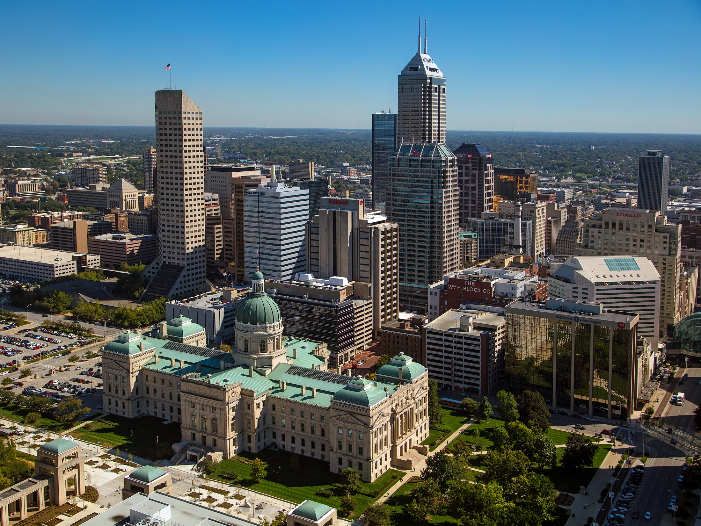

Welcome to Indianapolis, Indiana
- Population: Approximately 900,000 residents
- Year Incorporated: 1821
- Region: Central Indiana
- Classification: Urban
- Average Income Level: Above the state average
Indianapolis, often referred to as the "Crossroads of America," is not only the political center of Indiana but also a hub for sports, arts, and education. From the iconic Indianapolis Motor Speedway to the vibrant cultural districts, the city offers a diverse range of experiences for residents and visitors alike.
Explore the city's historic landmarks, enjoy its thriving arts scene, and immerse yourself in the Hoosier hospitality that defines Indianapolis.